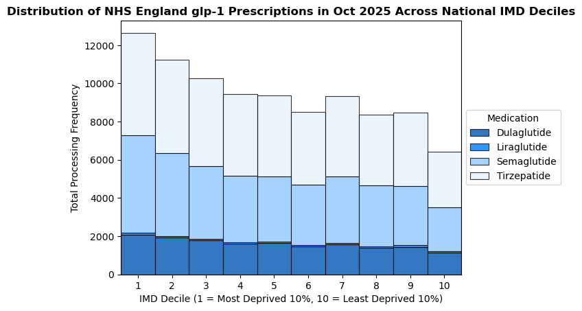

The objective of this data analysis project to evaluate and visualise how variations in glucagon-like pepetide-1 receptor agonist (glp-1 RA) prescription rates is related to wealth disparity in England.
Health Inequalities
Type 2 diabetes in the UK is more prevalent in lower income populations. According to Health Survey for England 2024, individuals living in the most deprived 10% of areas in England are almost three times as likely[1].
Emerging Therapies
Glp-1 is a naturally occurring hormone released after eating. Glp-1 RAs mimic it by inhibiting glucagon release, while simultaneously stimulating insulin production to reduce blood sugar levels and control type II diabetes. By suppressing appetite and slowing digestion, these medications are also highly beneficial for patients with obesity struggling to lose weight [2].
There a four main classes of glp-1s that the NHS prescribes:
Metric |
Equation |
Value |
| Absolute Gap |
Decile 1 − Decile 10 |
6,219 records |
| Disparity Ratio |
Decile 1
Decile 10
|
1.97 |
| Most Deprived Half Allocation |
∑i=15 Decilei
Total Prescriptions
× 100
|
56.3% |
| Tirzepatide Prescription Share |
Tirzepatide Count
Total Prescriptions
× 100
|
44.5% (41,860 records) |
| Semaglutide Prescription Share |
Semaglutide Count
Total Prescriptions
× 100
|
37.6% (35,377 records) |
| Dulaglutide Prescription Share |
Dulaglutide Count
Total Prescriptions
× 100
|
17.0% (16,001 records) |
| Liraglutide Prescription Share |
Liraglutide Count
Total Prescriptions
× 100
|
0.9% (825 records) |
Table 1: Comparison of glp-1s prescribed by the NHS. [3]
Socioeconomic Barriers to Access
Despite disproportionate clinical need, when breakthrough medicines like glp-1 RAs become available, those of more precarious socioeconomic backgrounds are usually the last to access them, despite the fact that they typically need them the most. With glp-1 medications, this disparity is accelerated by a thriving private market, which allows affluent populations to purchase out-of-pocket treatment, while resource-constrained public routes face restricted rollouts [4].
However, within public health infrastructure, resource-constrained routes must balance these market forces against clinical need. By analysing NHS primary care prescribing data, this study explores whether public allocation patterns mirror private disparities or actively counter them by targeting regions with the highest underlying disease burden.
Data Sources
This analysis evaluates primary care data from October 2025. This specific timeframe was selected to synchronise two critical national datasets
- Government Index Release: Aligns perfectly with the publication of the English Indices of Deprivation 2025 (IoD25).
- NHS Quarterly Window: Matches the quarterly release of NHS GP Practice registrations required to extract localised LSOA population data.
Analysis Methodology and Metrics
The data processing was executed in Python using the Pandas library to merge and map the datasets via the following key variable fields:
PRACTICE_CODE: The unique identifier for matching individual prescription records to specific GP practices.LSOA_CODE: The geographic neighbourhood boundary code used to map each practice to its primary patient catchment area.IMD_DECILE: The structural deprivation rank extracted from the government indices to evaluate socioeconomic distribution.
Project Results Summary
The stacked bar chart below illustrates the total prescribing frequency across national IMD deciles, colour-coded to show the individual volume contribution of each GLP-1 medication.

Figure 1: Stacked bar chart of the total prescribing frequency of glp-1s by IMD decile. Self-sourced
The table below outlines the core socioeconomic distribution metrics and prescription share breakdowns extracted from the 94,063 filtered NHS England primary care prescription records.
Metric |
Equation |
Value |
| Absolute Gap |
$\text{Decile } 1 - \text{Decile } 10$ |
6,219 records |
| Disparity Ratio |
$\displaystyle \frac{\text{Decile } 1}{\text{Decile } 10}$ |
1.97 |
| Most Deprived Half Allocation |
$\displaystyle \frac{\sum_{i=1}^{5} \text{Decile}_i}{\text{Total Prescriptions}} \times 100$ |
56.3% |
| Tirzepatide Prescription Share |
$\displaystyle \frac{\text{Tirzepatide Count}}{\text{Total Prescriptions}} \times 100$ |
44.5% (41,860 records) |
| Semaglutide Prescription Share |
$\displaystyle \frac{\text{Semaglutide Count}}{\text{Total Prescriptions}} \times 100$ |
37.6% (35,377 records) |
| Dulaglutide Prescription Share |
$\displaystyle \frac{\text{Dulaglutide Count}}{\text{Total Prescriptions}} \times 100$ |
17.0% (16,001 records) |
| Liraglutide Prescription Share |
$\displaystyle \frac{\text{Liraglutide Count}}{\text{Total Prescriptions}} \times 100$ |
0.9% (825 records) |
Table 1: Summary table of statistics extracted from python pipeline. Self-sourced
Key Takeaways
Presenting the data on a linear scale clearly reveals the socioeconomic step-gradient across deciles; as neighborhood deprivation decreases, the frequency of NHS GLP-1 prescribing steadily declines.
Despite the fact that, as previously discussed, type 2 diabetes is 3x as prevalent in the 10% most deprived populations in the UK compared to those in the 10% least deprived areas [1], NHS England prescribes glp-1s to the 10% most deprived only 2x as much.
Liraglutide only made up 0.9% of prescriptions; this may be due to its reduced efficacy, as well as more gruelling daily injection administration routine [3] . According to a 2020 study comparing the efficacy of weekly semaglutide vs daily liraglutide, semaglutide reduced HbA1c by 1.7%, compared to 1.0% for liraglutide. Additionally, subjects on semaglutide lost over 3x as much weight as those on liraglutide [5].
In conclusion, although this data analysis pipeline shows that NHS England is priotising areas with greater clinical need, significant regional health disparities remain, which require targeted policies and interventions to close.
[1] Health Survey for England, 2024 - NHS England Digital [Internet]. NHS England Digital. 2024 [cited 2026 Nov 6]. Available from: https://digital.nhs.uk/data-and-information/publications/statistical/health-survey-for-england/2024/adults-health
[2] Karagiannis T, Bekiari E, Tsapas A. Socioeconomic aspects of incretin-based therapy. Diabetologia [Internet]. 2023 Jul 12 [cited 2026 Nov 6];66(10):1859–1868. Available from: https://pubmed.ncbi.nlm.nih.gov/37433896/
[3] 1.Diabetes UK. GLP-1 agonists [Internet]. Diabetes UK. 2017 [cited 2026 Nov 8]. Available from: https://www.diabetes.org.uk/about-diabetes/looking-after-diabetes/treatments/tablets-and-medication/glp-1
[4] Brennan-Davies AH, Lakey S. Pharmacological privilege: How glucagon-like Peptide-1 (GLP-1) medications are widening health inequalities. Cureus [Internet]. 2025 Nov 17 [cited 2026 Nov 6];. Available from: https://www.cureus.com/articles/434999-pharmacological-privilege-how-glucagon-like-peptide-1-glp-1-medications-are-widening-health-inequalities
[5] Capehorn MS, Catarig AM, Furberg JK, Janez A, Price HC, Tadayon S, et al. Efficacy and safety of once-weekly semaglutide 1.0 mg vs once-daily liraglutide 1.2 mg as add-on to 1–3 oral antidiabetic drugs in subjects with type 2 diabetes (SUSTAIN 10). Diabetes & Metabolism [Internet]. 2019 Sept [cited 2026 Nov 8];46(2):101117. Available from: https://www.sciencedirect.com/science/article/pii/S1262363619301326?via%3Dihub